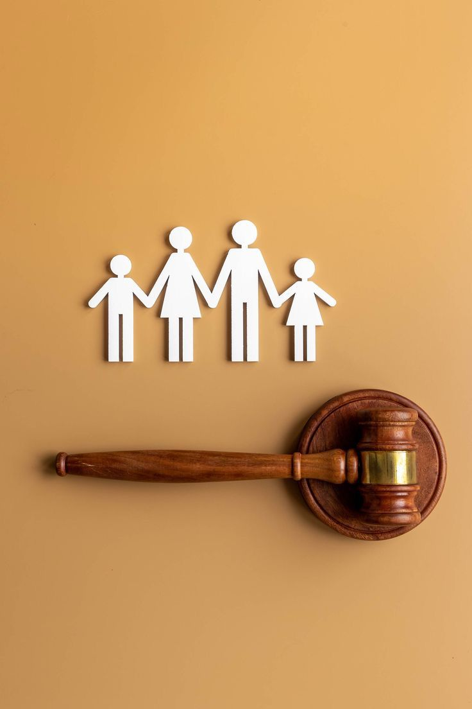

oleh : esaedlwiis
Indonesia Sebagai Negara Hukum berarti bahwa seluruh aspek kehidupan bernegara dan bermasyarakat diatur oleh hukum, bukan oleh kekuasaan sewenang-wenang..
Perkembangan Negara Hukum di Indonesia
Perkembangan konsep negara hukum di Indonesia mengalami perjalanan panjang dan dinamis yang dipengaruhi oleh sejarah kolonialisme, perjuangan kemerdekaan, serta proses reformasi ketatanegaraan. Konsep negara hukum sendiri merujuk pada prinsip bahwa kekuasaan pemerintahan dibatasi oleh hukum yang adil dan ditegakkan secara konsisten. Di Indonesia, prinsip ini diadopsi secara resmi dalam berbagai peraturan perundang-undangan, termasuk dalam Pembukaan dan batang tubuh UUD 1945.
1. Masa Sebelum Kemerdekaan
Sebelum kemerdekaan, Indonesia berada di bawah kekuasaan kolonial Belanda yang menjalankan pemerintahan berdasarkan sistem hukum Eropa Kontinental. Meskipun sistem hukum formal sudah diberlakukan, hukum tersebut bersifat diskriminatif dan tidak menjamin keadilan bagi seluruh rakyat. Hukum adat yang berkembang di masyarakat tidak mendapatkan tempat yang proporsional.
2. Masa Awal Kemerdekaan
Setelah Indonesia merdeka pada 17 Agustus 1945, konsep negara hukum mulai dikembangkan dalam Konstitusi. Dalam alinea keempat Pembukaan UUD 1945 secara eksplisit disebutkan bahwa negara Indonesia "berdasarkan hukum (rechtstaat), bukan kekuasaan belaka (machtsstaat)." Meskipun begitu, pada masa ini penegakan hukum masih belum ideal karena kondisi negara yang belum stabil akibat konflik internal dan ancaman kolonial kembali.
3. Masa Orde Lama (1945–1966)
Pada masa pemerintahan Presiden Soekarno, pelaksanaan negara hukum belum berjalan efektif. Masa Demokrasi Terpimpin (1959–1966) ditandai oleh sentralisasi kekuasaan di tangan presiden. Penegakan hukum cenderung tunduk pada kepentingan politik. Meski demikian, upaya pembentukan lembaga hukum dan peradilan terus berjalan meski belum optimal.
4. Masa Orde Baru (1966–1998)
Di bawah pemerintahan Presiden Soeharto, terdapat stabilitas politik dan ekonomi yang cukup baik, namun penegakan hukum sangat lemah. Hukum kerap dijadikan alat kekuasaan. Konsep negara hukum hanya berlaku dalam aspek formal, tidak substantif. Banyak pelanggaran HAM dan korupsi yang tidak ditindak tegas. Demokrasi dan kebebasan sipil sangat terbatas.
5. Masa Reformasi (1998–sekarang)
Reformasi 1998 menjadi titik balik penting dalam memperkuat negara hukum di Indonesia. UUD 1945 mengalami empat kali amandemen untuk mempertegas prinsip demokrasi, hak asasi manusia, supremasi hukum, dan pembatasan kekuasaan. Lembaga-lembaga negara diperkuat, seperti Mahkamah Konstitusi, Komisi Yudisial, dan Komisi Pemberantasan Korupsi (KPK). Partisipasi masyarakat dalam pengawasan hukum juga meningkat.
6. Tantangan Kontemporer
Meskipun telah terjadi kemajuan signifikan, pelaksanaan negara hukum di Indonesia masih menghadapi tantangan seperti:
Korupsi yang masih merajalela di berbagai sektor
Lemahnya penegakan hukum yang adil dan merata
Intervensi politik terhadap lembaga hukum
Masih rendahnya kesadaran hukum masyarakat